Coordinator check: see section 14 of mounting.md. Holes from 33 to 40 mm have no adapter in the tables below; a wider A6 gasket should cover them to about 44 mm. Three CAD items are also listed there.
2026-11-02. Concepts only, no CAD. Full write-up: mounting.md. Research and links: research_notes.md. Anything unsourced is marked UNVERIFIED in the write-up.
Interface: a dock ring on a 3 mm swappable plate. The ring grips the Crown's own foot and plinth chamfer (two hook tongues at the USB end, one flexure latch at the far end); the sole and sealed head stay as they are. Print first: ring plus blank plate with A6 Pad, then A2 Span for the round can, then A5 Expander (or A3 Collar) for large holes.
| # | Adapter | Fits | Score /30 | Sketch |
|---|---|---|---|---|
| A1 | Hang (rim saddle) | round can or bucket rim, lid off | 21 | a1-hang.svg |
| A2 | Span (bars across the opening) | rim OD 250 to 700 mm, lid off | 25 | a2-span.svg |
| A3 | Collar (printed bulkhead) | hole 42.5 mm and up, top 2 to 10 mm+ | 23 | a3-collar.svg |
| A4 | Umbrella (push-in, TPU skirt) | hole 40 to 42 (46, 52 variants), top 2 to 6 mm | 22 | a4-umbrella.svg |
| A5 | Expander (TPU ring plug) | hole 50.5 mm and up, top 2 to 16 mm | 24 | a5-expander.svg |
| A6 | Pad (flange and gasket) | hole 25 to 33 mm, top 2 to 6 mm | 26 | a6-pad.svg |
| A7 | Clamp (edge clamp) | tank rim, shelf, wall top, edge 3 to 45 mm | 21 | a7-clamp.svg |
| A8 | Tile (magnets) | flat surface with a 25 to 33 mm hole | 22 | a8-tile.svg |
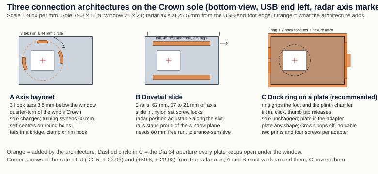
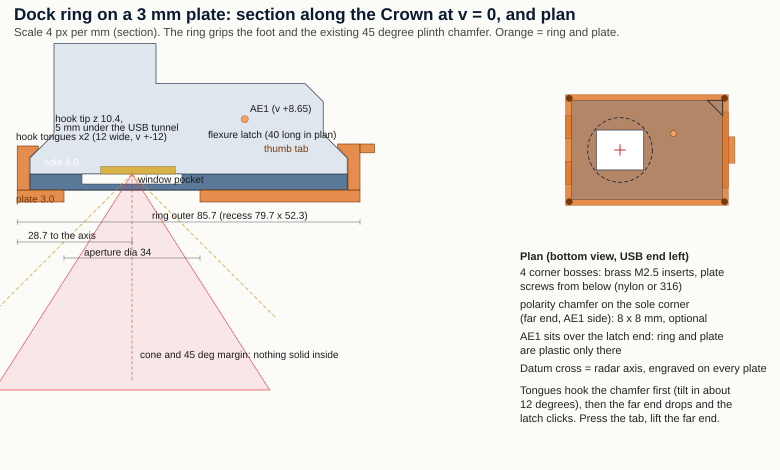
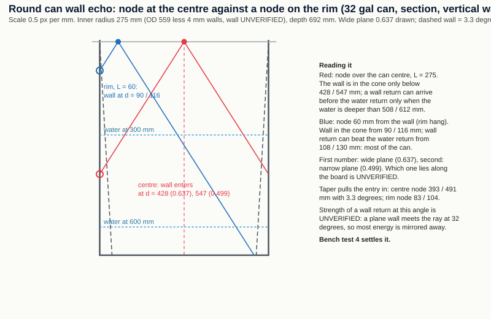
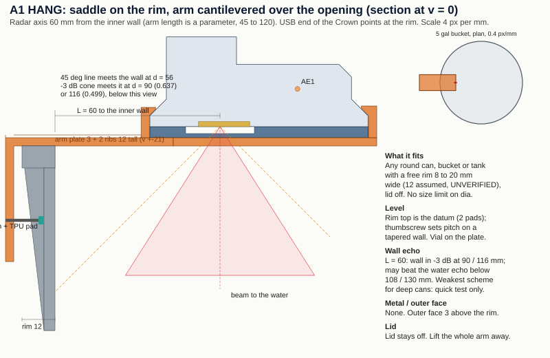
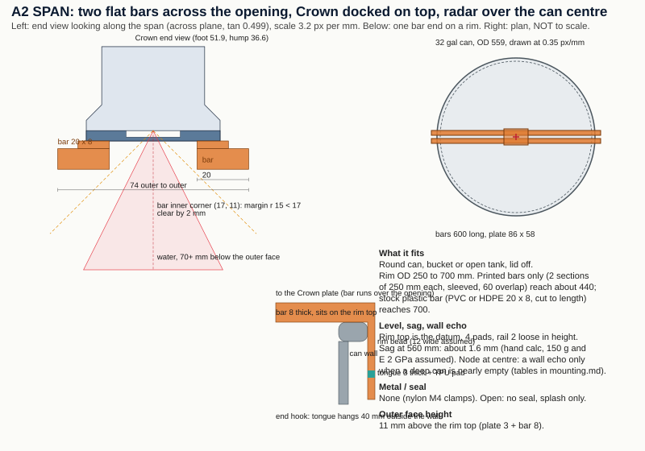
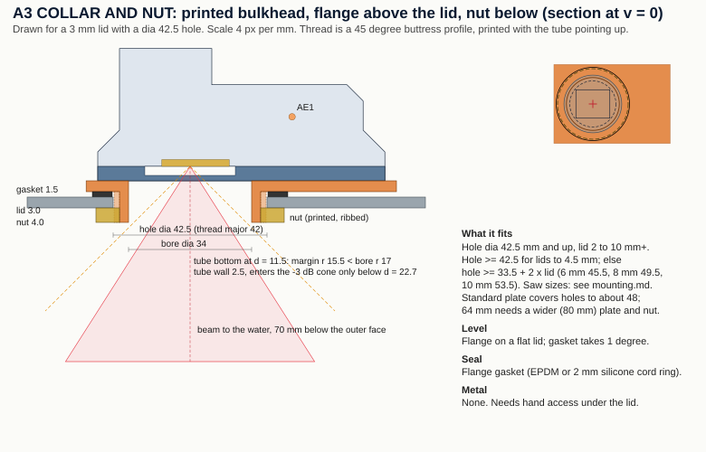
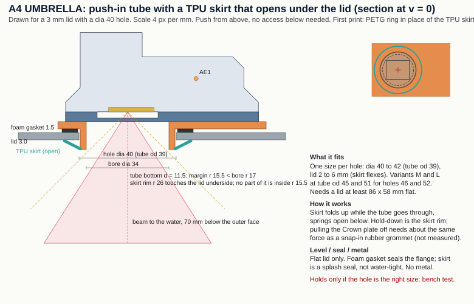
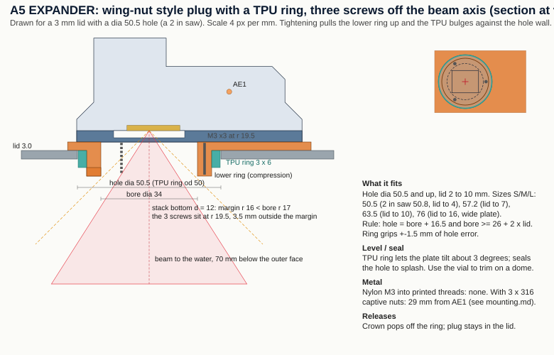
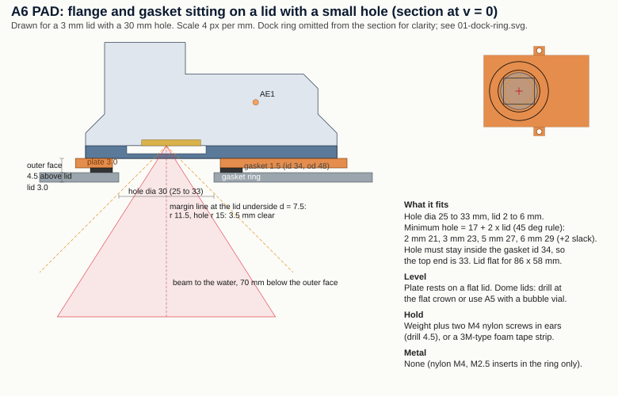
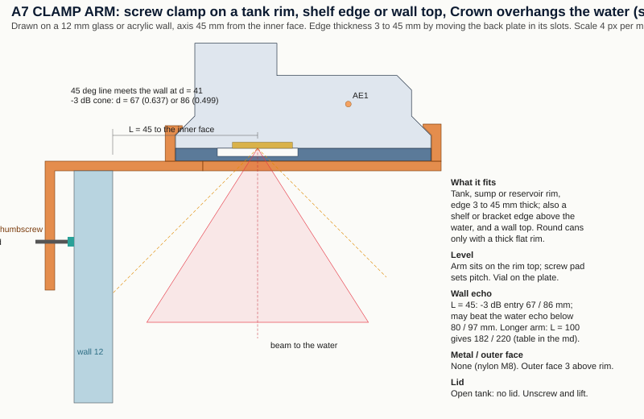
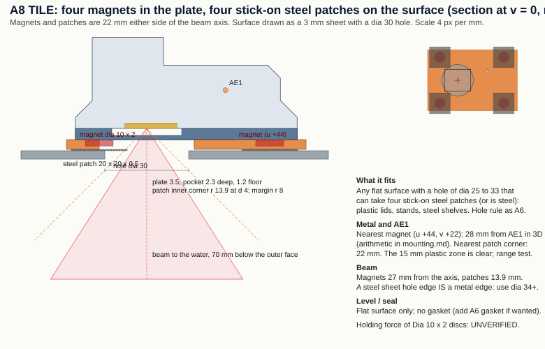
Colour key in the sketches: orange = ring and plate, red = -3 dB beam cone, dashed orange = 45 degree margin line, grey = container, teal = TPU, dark = gasket, yellow = nut, orange dot = AE1 antenna.